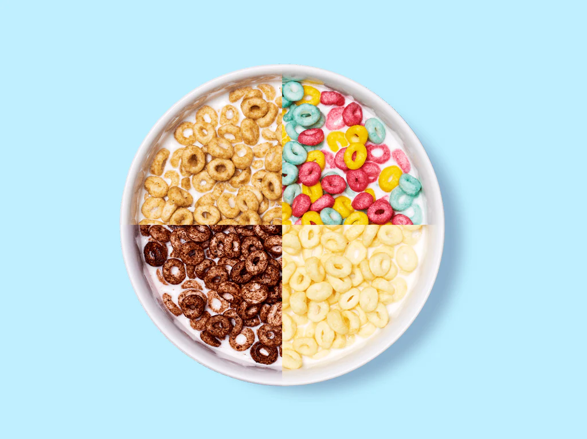

Cereal

Description
Who doesn't love a fresh, cold bowl of cereal in the morning. The clear
king of breakfast foods is the minutemen of them all: The Bowl of Cereal.
Ingredients
- Cereal of choice
- Milk of choice
- Back of the cereal box for reading
Steps
- Grab a bowl, one of mom's mixing bowls is preferred.
- Dump an abnormal amount of cereal into the bowl.
- Pour milk over the cereal, making sure to spill a little.
- Proceed to devour before it gets mushy.
Leave us a review!